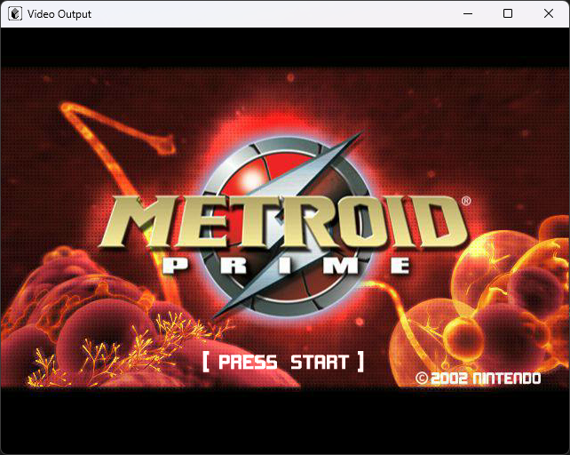
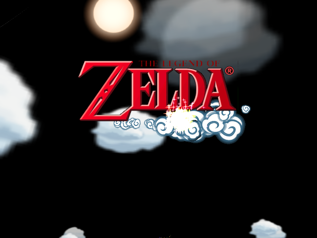
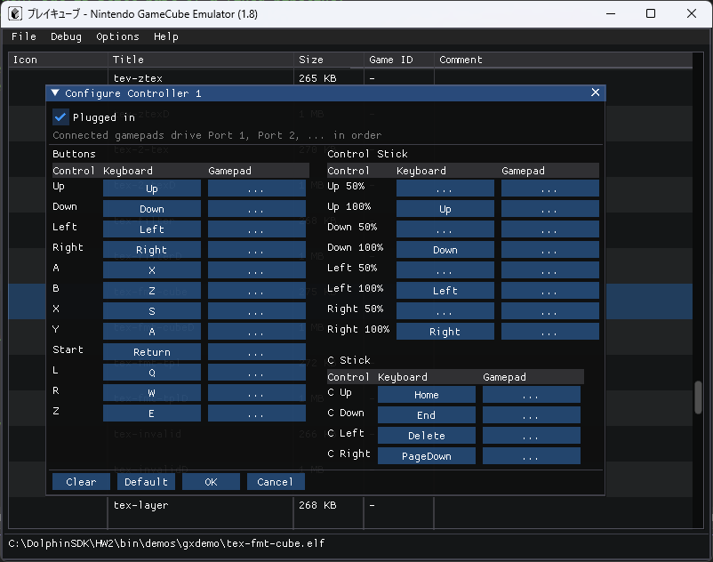
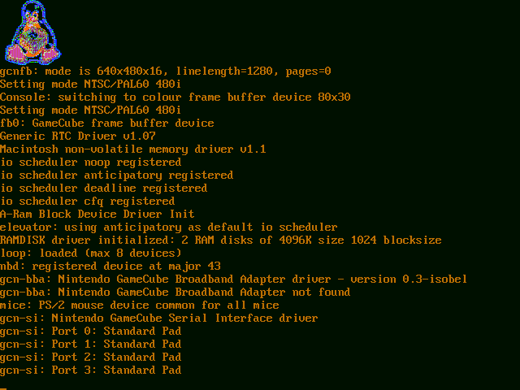

Что нового
Релиз 1.8 — релиз производительности: рекомпилятор Gekko в x86-64, Paired-Single на SSE и событийные потоки устройств, которые больше не крутятся на тайм-базе. Вместе с исправлениями агрегатных линий прерываний именно это позволяет загрузиться Zelda: The Wind Waker и выпускает Animal Crossing из обработчика исключений.
Рекомпилятор Gekko
Компилятор базовых блоков в x86-64 держит гостевые регистры в регистрах хоста и поднимает
эмулируемый процессор с 39.7 до 155.9 MIPS; код, насыщенный АЛУ, ускоряется в 8.6 раза.
Команды jit 0 и jit 1 переключают движки на ходу.
Paired-Single на SSE
Все арифметические инструкции PS и обе квантизованные загрузки/сохранения транслируются в SSE/SSE2; нагрузка с преобладанием PS растёт с 59 до 435 MIPS.
Конец активного ожидания
Развёртка VI и опрос последовательного порта переехали в поток процессора, а потоки CP, AI DMA и DSP блокируются на событиях. Ikaruga вышла на 4.58x реального времени, Luigi's Mansion — на 4.26x.
Чёрные экраны исправлены
Агрегатные линии прерываний DSP и дискового интерфейса заработали, а опрос последовательного порта идёт по расписанию видеолиний: Zelda: The Wind Waker доходит до титульного экрана, Animal Crossing показывает логотип Nintendo.
Поддержка RVZ
Сжатые образы GameCube в контейнере RVZ из Dolphin (Zstandard) монтируются только для чтения — рядом с ISO и GCM.
Настройка контроллеров в SDL
У SDL-сборки появился собственный бэкенд контроллеров и полное окно «Configure Controller N»: привязки клавиатуры и геймпада, аналоговые стики и триггеры.
Скриншоты
Снято с текущей сборки (линейка релиза 1.8).




gcnfb с драйверами Broadband Adapter и SI.Как собрать
Windows
Откройте scripts/VS2026/pureikyubu.sln в Visual Studio 2026 и нажмите Build.
Есть конфигурации Debug и Release как для Win32-, так и для SDL-интерфейса.
Linux
Сборка через CMake + SDL2, проверена в том числе под WSL2:
sudo apt install libglew-dev
git clone https://github.com/emu-russia/pureikyubu.git
cd pureikyubu && git submodule update --init
cd build && cmake .. && make
./pureikyubu pong.dolДокументация
Release Notes 1.8
English release notes · Заметки о релизе на русском · Markdown
Дайджест после 1.6
Wiki
Внутренности эмулятора: Flipper, GFX, Gekko, Debug UI и разбор IROM процессора DSP.
Архив
Прошлые релизы, оставлены для справки.
Release Notes 1.7
English release notes · Заметки о релизе на русском · Markdown